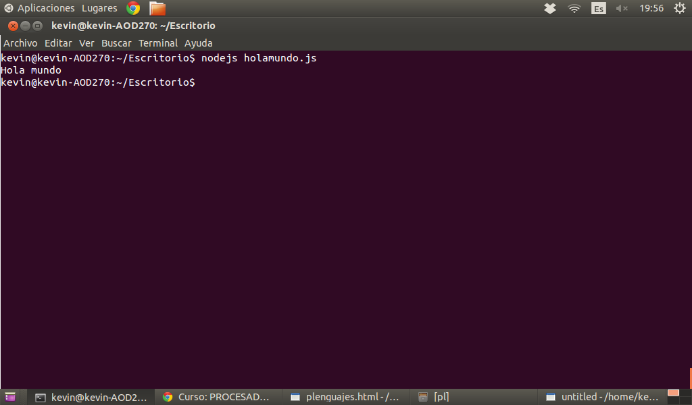

Para instalar node.js abrimos una terminal en ubuntu e introducimos los siguientes comandos
Para instalar paquetes adicionales que nos pueden hacer falta en un futuro ejecutamos
Una vez hechos estos comandos tendremos instalado el Node.js.
Abrimos el editor y creamos un archivo llamado holamundo.js. Queremos escribir "Hola Mundo" a STDOUT, y para ello escribimos en el archivo
Luego guardamos, vamos a la terminal y escribimos
